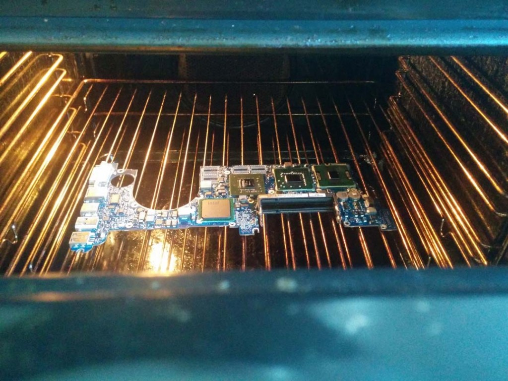
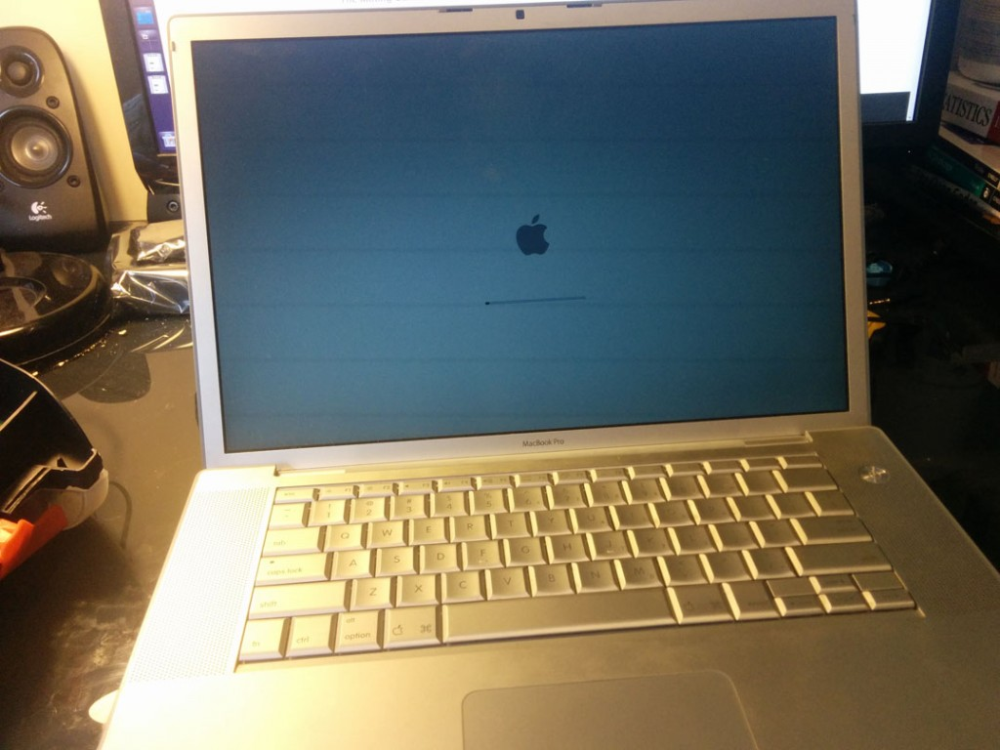
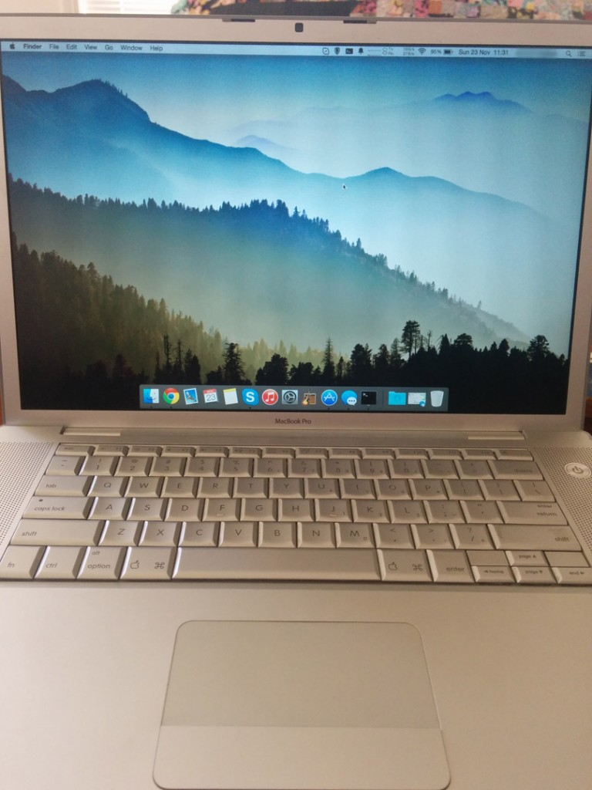

Recipe of the week: Freshly baked MacBook Pro
A panicked friend came to me yesterday with a broken 15″ MacBook Pro (Early 2008).
I sat the thing down on my desk and hit the power button. The hard drive & disk drive made a bit of noise, the power light glowed faintly then CLUNK and it was off again. No glowing Apple, no hope of booting to Recovery Mode.
He repeatedly mentioned that it “must be a hard disk issue” so I swiftly replaced it, in the back of my mind knowing it was unlikely to fix anything. After this I reseated, then replaced the RAM, removed various other components methodically, ensured that no connectors had come loose, reset PRAM/SMC, pressed all the obscure key combinations I could find mentioned on the internet when powering on the machine, but still nothing.
After a few hours, and transferring data from the supposedly borked hard drive onto a portable USB disk, we pronounced the machine dead and went off on an adventure to the city to find him a new work machine.
Some people would stop there, but after seeing it mentioned in a few places, and having nothing to lose, I thought it’d be worth a try seeing what would happen if I put the thing in the oven for a little while.
Queue the unscrewing, de-clamping montage, after which I was left with the logic board, cleanly polished of all thermal paste.
After pre-heating the oven to about 190 °C, I placed the motherboard in, CPU-Side-Up, and let it sizzle for about 9 minutes as recommended by another online source.
 After letting it cool on a cake rack for around 20 minutes (my housemate laughing the whole while about how ridiculous this all seemed), I proceeded to put everything back together piece by piece.
With the battery back in, power cable connected, came the moment of truth.

Maniacal laughter entailed.

Almost 24 hours in and it’s still running like a new one.
I have no doubt in my mind that this is only a temporary fix, and if you do try this at home (which I generally wouldn’t recommend) YYMV.